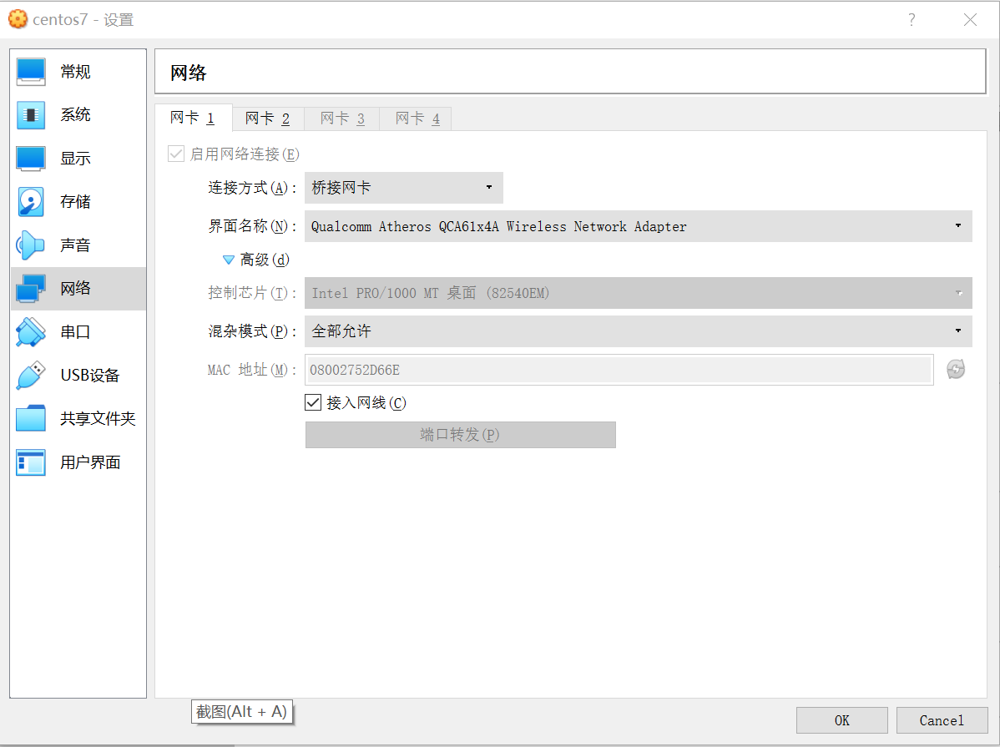
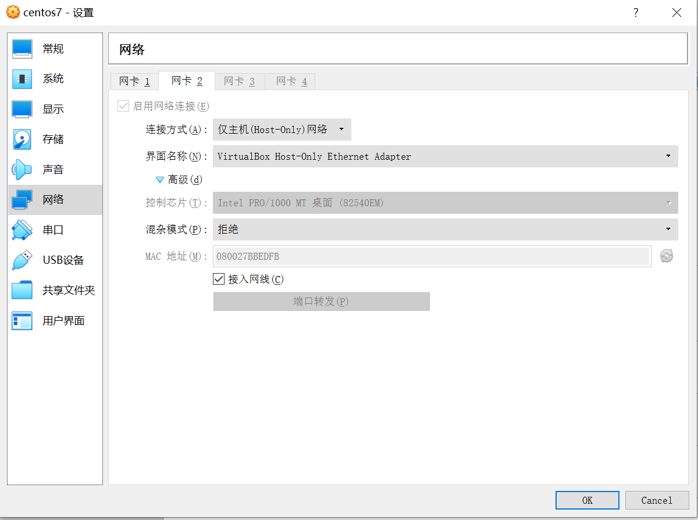
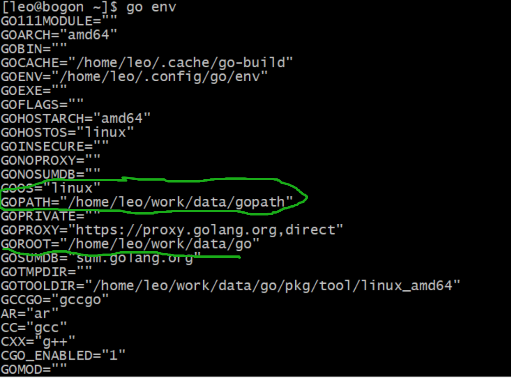
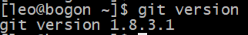
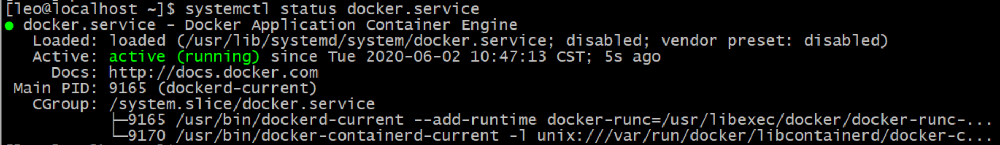

Centos Fabric 环境搭建
文章目录
CentOS虚拟机安装
-
安装VirtualBox
下载链接 https://download.virtualbox.org/virtualbox/6.1.8/VirtualBox-6.1.8-137981-Win.exe
-
下载CentOS 7
下载链接 http://mirrors.aliyun.com/centos/7/isos/x86_64/CentOS-7-x86_64-DVD-2003.iso
-
安装CentOS7到虚拟机上
-
虚拟机网络配置

-
- 
CentOS系统配置
- 软件源配置
sudo wget -O /etc/yum.repos.d/CentOS-Base.repo http://mirrors.163.com/.help/CentOS7-Base-163.repo yum clean all yum makecache
-
安装git
sudo yum install git
-
安装go
wget https://studygolang.com/dl/golang/go1.14.3.linux-amd64.tar.gz
mkdir download
mv go1.14.3.linux-amd64.tar.gz download/
mkdir data
tar -C data/ -zxvf download/go1.14.3.linux-amd64.tar.gz
go环境变量配置
-
vi /etc/profile
-
添加下列配置到文件末尾
export GOROOT=/home/leo/work/data/go export GOPATH=/home/leo/work/data/gopath export PATH=$PATH:$GOROOT/bin:$GOPATH/bin
-
测试go 环境变量是否配置成功

-
git命令测试

-
fabric安装
1. 下载fabric代码
> cd github.com/hyperledger/
> git clone https://github.com/hyperledger/fabric.git
2. 下载fabric-sample代码
> git clone https://github.com/hyperledger/fabric-samples.git
启动fabric
-
进入fabric的scritpt目录，执行启动脚本boot.scritps
[leo@localhost scripts]$ ./bootstrap.sh
-
提示依赖docker
1 2 3 4 5 6Pull Hyperledger Fabric docker images ========================================================= Docker not installed, bypassing download of Fabric images ========================================================= -
安装docker
[leo@localhost ~]$ yum install docker-io
检查版本信息 [leo@localhost ~]$ docker version Client: Version: 1.13.1 API version: 1.26 Package version:
-
启动docker
[leo@localhost ~]$ sudo systemctl start docker
检查docker状态

-
测试hello-world
[leo@localhost ~]$ docker pull hello-world
[leo@localhost ~]$ sudo docker images REPOSITORY TAG IMAGE ID CREATED SIZE docker.io/hello-world latest bf756fb1ae65 5 months ago 13.3 kB
[leo@localhost ~]$ sudo docker run hello-world
Hello from Docker! This message shows that your installation appears to be working correctly.
To generate this message, Docker took the following steps:
- The Docker client contacted the Docker daemon.
- The Docker daemon pulled the “hello-world” image from the Docker Hub. (amd64)
- The Docker daemon created a new container from that image which runs the executable that produces the output you are currently reading.
- The Docker daemon streamed that output to the Docker client, which sent it to your terminal.
-
docker常用命令
1 2 3 4 5 6 7 8 9docker images //查看镜像 docker pull XXX //拉取镜像 docker run -d xxx //启动容器 docker ps //查询启动的容器 docker stop XXX //关闭容器 docker run -d -p 8082:80 nginx //容器上的80端口映射到机器上的8082端口 docker stop XXX //停止容器 docker rmi -f XXX //删除镜像 -f 强制删除 -
下载fabric镜像
1 2[leo@localhost fabric]$ cd scripts/ [leo@localhost scripts]$ ./bootstrap.sh -
安装docker-compose
1 2sudo yum install epel-release sudo yum install docker-compose检查docker-compose版本
[leo@bogon first-network]$ docker-compose –version docker-compose version 1.18.0, build 8dd22a9
-
安装pip
1 2 3 4sudo yum install python-pip sudo pip install --upgrade pip [leo@bogon ~]$ pip -V pip 20.1.1 from /usr/lib/python2.7/site-packages/pip (python 2.7) -
启动demo
添加两个文件到fabric-samples目录并解压
hyperledger-fabric-ca-linux-amd64-1.3.0.tar.gz
hyperledger-fabric-linux-amd64-1.3.0.tar.gz
1 2[leo@bogon first-network]$ cd $GOPATH/src/github.com/hyperledger/fabric-samples/first-network [leo@bogon first-network]$ ./byfn.sh generate
参考网站
- [^go语言中文网] https://studygolang.com/dl
- [^163CentOS镜像] http://mirrors.163.com/.help/centos.html
- docker镜像文件网址 ：https://hub.docker.com/explore
文章作者 lilei520007@126.com
上次更新 2020-06-27